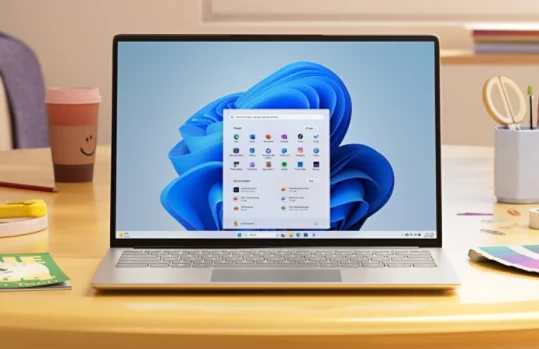

从零到开机：Windows 11 装机完整实战教程
一台新电脑到手或老机器重装系统，跟着这份教程一步步走，从版本选择到激活收尾全部搞定，避开新手最容易踩的五个坑。
一台裸机到手或者老电脑卡到想清零重装，对着 Windows 11 却不知道从哪下手——这篇教程带你从选版本到装完系统、激活、装驱动，全部流程跑一遍。教程结束时你应该能独立完成一台机器的完整装机，并且知道哪里容易翻车。
准备工作
动手之前先确认三件事，别等走到一半才发现缺东西：
你的电脑能不能装 Windows 11？ 从Windows 官网能找到 PC 健康检查工具，跑一下就知道兼容性，TPM 2.0 和 Secure Boot 是硬门槛。如果体检达标但 Windows 更新迟迟不推送，后面装系统还有别的路子。
要装家庭版还是专业版？ 简单判据：只用日常上网、办公、打游戏，家庭版完全够；需要远程桌面被别人连、BitLocker 给磁盘上锁、公司电脑要加域，才上专业版。两者首次开机都要联网登 Microsoft 账户，家庭版还额外可能碰到 S 模式（只能装商店应用，设置里免费切出来）。
准备一个至少 8GB 的空 U 盘（内容会被清空，提前备份），或者确认你的系统能通过 Windows 更新原地升级——后者是最省事的路径，不动任何文件和应用，约半小时到两小时搞定。
第一步：选装系统的路径
Windows 11 其实有三条路可以选，挑一条适合你的：
路径 A：Windows 更新原地升级（首选）
打开「设置 > Windows 更新 > 检查更新」，如果弹出 25H2 或「功能更新」条目，直接点下载安装就行。这条路径全保留数据和应用，几乎零操作量，适合已有系统的兼容机日常升级。等不到推送但体检过了？别急，还有路径 B。
路径 B：安装助手
在 Windows 官方页面能找到「Windows 11 安装助手」，是个很小的工具。从官方下载下来之后以管理员身份运行，它会自动检查兼容性、下载系统包、原地升级，默认保留文件和应用。这是收不到更新推送但又不想动 U 盘的人的首选。
路径 C：U 盘全新安装
系统已经卡到想清零重装，或者给一台裸机装机，只能走这条路。从微软官方下载「媒体创建工具（Media Creation Tool）」，插入 U 盘，工具会自动把系统写成可引导盘。重启电脑时按 F12 或 Esc（不同品牌不一样）进启动菜单，选 U 盘启动，然后跟着安装向导走。全新安装会清空系统盘，之前一定要把桌面、文档、下载这些位置备份好。
第二步：走安装向导
不管从哪条路进来，真正的安装向导流程是一样的。这里挑几个新手容易懵的点提前说清楚：
产品密钥那一步：如果你是升级或者有数字许可证，可以直接跳过——登录 Microsoft 账户后系统会自动激活。零售密钥输入框在下方隐藏了，找一下。
自定义安装 vs 升级：全新安装选「自定义」，升级路径会自动走「升级」。自定义里能看到所有磁盘分区，系统盘选对了（通常是 C 盘或系统预留分区合并后的那个），其他盘不用动，数据安全。
地区和键盘布局：如果之后要改，进系统了在「设置 > 时间和语言」里能随时改，不是一锤定音。
安装过程中会自动重启几次，别慌，正常现象。
第三步：装完系统的必做清单
进入桌面之后，别急着点来点去，先把这几件事按顺序做完：
1. 确认激活状态：右下角如果有水印提示未激活，打开「设置 > 系统 > 激活」看一下状态。登录账户后数字许可证会自动恢复；如果还没激活，检查一下网络连接，等几分钟再刷新。
2. 跑一次 Windows 更新：「设置 > Windows 更新 > 检查更新」，装完所有可用更新并重启——很多驱动和安全补丁跟着这个一起推，新装系统这一步别省。
3. 装厂商驱动：如果更新里没覆盖全（比如显卡驱动、触摸板驱动），去电脑品牌官网的支持页，按机型下载完整驱动包装一遍。
4. 把必装软件装进去：浏览器、输入法、压缩工具、Office——按你平时的习惯来就行。微软自带的 Microsoft Store 里也有常用应用，但有些厂商的版本更全。装完驱动和常用软件后想深挖某个功能的细节，可以去Windows 文档里翻参数和进阶玩法。

新手最容易翻车的三个坑
坑一：TPM 报红
PC 健康检查提示 TPM 2.0 不满足，别急着重装 Windows 10。先进 BIOS 设置（开机按 Del 或 F2），找到 TPM 选项，把「Intel PTT」或「AMD fTPM」打开——很多机器出厂默认关着。打开后保存重启再体检一次。
坑二：U 盘装系统后找不到启动盘
BIOS 里 Secure Boot 和 Legacy Boot（或 CSM）冲突了。如果用的是微软官方工具做的 U 盘，保持 Secure Boot 开启、CSM 关闭；如果是用第三方工具写的，可能需要关掉 Secure Boot。两种组合试一遍总能进。
坑三：装完发现磁盘被锁定
这是 BitLocker 在作怪——有些品牌机默认开了设备加密。重装系统前要先在「设置 > 系统 > 存储 > 存储设置 > 高级存储设置 > 磁盘和卷」里关掉加密，或者记住恢复密钥（在 Microsoft 账户的设备页面能找回）。没关就重装，重启后会要求输入恢复密钥才能进系统，忘了的话全盘数据都救不回来。
进阶一句话
基础流程跑通之后可以试试 Copilot 和 Snap Layouts——前者让 AI 帮你做重复性的文件整理，后者把屏幕切成几个区域同时放窗口，都是 25H2 之后越来越好用的新功能。
装机这件事一次学会终身受益，不像软件教程那样半年就过时。真正踩过一次坑（比如 TPM、BitLocker）之后，下次再装就是半小时搞定的事了。这套资料同步放在了 GitHub、Gitee 和 GitCode 上，国内访问走 Gitee 或 GitCode 会更顺畅一些。